Water Tube System DAE Work-Precision Diagrams
This is a benchmark of the Water Tube System, an index-2 DAE of dimension 49 from the IVP Test Set (Fekete 2006, water.F).
The system models water flow through a pipe network with 13 nodes and 18 pipes, accounting for turbulence and wall roughness. The network has two buffer nodes (nodes 5 and 8), external inflow at nodes 1 and 13, and external outflow at node 10. The external flows model a 17-hour demand cycle typical of municipal water systems.
Variables (49 state variables):
- 18 pipe flows: φᵢⱼ(t), volumetric flow rates [m³/s]
- 18 resistance coefficients: λᵢⱼ(t), Darcy friction factors (dimensionless)
- 13 node pressures: pₙ(t) [Pa]
Physical challenges:
- Regime switching: Each pipe transitions between laminar (R ≤ 2300) and turbulent flow, with the turbulent Colebrook equation being implicit in λ.
- Scale separation: Flows ∼ 10⁻³, friction factors ∼ 10⁻², pressures ∼ 10⁵ — nine orders of magnitude difference.
- Index-2 structure: Variables 1–38 are index-1, while the 11 non-buffer node pressures (variables 39–49) are index-2 algebraic constraints.
We benchmark three formulations:
- Mass-Matrix ODE Form:
M·du/dt = f(u, t)with diagonal singular M, solved with Rosenbrock-W methods and BDF. - DAE Residual Form:
F(du, u, t) = M·du − f(u, t) = 0, solved with IDA. - MTK Index-Reduced Form: Defined symbolically with
structural_simplifyreducing from 49 to 32 states via automatic index reduction.
Reference: Fekete, I.: Water tube system, IVP Test Set for DAE Solvers, Release 2.4, University of Bari, 2006.
using OrdinaryDiffEq, Sundials, DiffEqDevTools, ModelingToolkit, ODEInterfaceDiffEq,
Plots, DASSL, DASKR
using OrdinaryDiffEqBDF, OrdinaryDiffEqFIRK, OrdinaryDiffEqRosenbrock
using LinearAlgebra
using ModelingToolkit: t_nounits as t, D_nounits as DPhysical Parameters
All constants are taken directly from water.F (the IVP Test Set source):
const NU = 1.31e-6 # kinematic viscosity [m²/s]
const GRAV = 9.8 # gravitational acceleration [m/s²]
const RHO = 1.0e3 # water density [kg/m³]
const RCRIT = 2.3e3 # critical Reynolds number (laminar/turbulent)
const LPIPE = 1.0e3 # pipe length [m]
const KROUGH = 2.0e-4 # wall roughness [m]
const DPIPE = 1.0 # pipe diameter [m]
const BBUF = 2.0e2 # buffer coefficient
const PI_C = 3.141592653589793238462643383
# Derived constants
const APIPE = PI_C * DPIPE^2 / 4.0 # cross-sectional area [m²]
const MU = NU * RHO # dynamic viscosity [Pa·s]
const VMASS = RHO * LPIPE / APIPE # mass coeff for flow equations
const CMASS = BBUF / (RHO * GRAV) # mass coeff for buffer pressures0.02040816326530612Network Topology
The pipe network connects 13 nodes via 18 directed pipes. Nodes 5 and 8 are buffer nodes (modeled with compliance/capacitance). External inflows enter at nodes 1 and 13; external outflow exits at node 10.
# 18 pipes: (from_node, to_node) — matches Fortran phi(i,j) ordering
const PIPES = [
(1,2), (2,3), (2,6), (3,4), (3,5), (4,5),
(5,10), (6,5), (7,4), (7,8), (8,5), (8,10),
(9,8), (11,9), (11,12),(12,7), (12,8), (13,11)
]
const NNODES = 13
const NPIPES = 18
# Pressure variable mapping: node → y-index (Fortran ordering)
# Buffer nodes 5, 8 → y[37], y[38] (differential)
# Other nodes → y[39:49] (algebraic, index-2)
const NODE_TO_YIDX = Dict(
5=>37, 8=>38, 1=>39, 2=>40, 3=>41, 4=>42,
6=>43, 7=>44, 9=>45, 10=>46, 11=>47, 12=>48, 13=>49
)
# f(37:49) → node ordering for net flow conservation
const NETFLO_NODES = [5, 8, 1, 2, 3, 4, 6, 7, 9, 10, 11, 12, 13]
# Precompute: for each node, which pipe indices flow IN and OUT
const NODE_INFLOWS = [Int[] for _ in 1:NNODES]
const NODE_OUTFLOWS = [Int[] for _ in 1:NNODES]
for k in 1:NPIPES
push!(NODE_OUTFLOWS[PIPES[k][1]], k)
push!(NODE_INFLOWS[PIPES[k][2]], k)
endRHS Function
The right-hand side has three blocks:
- Momentum equations (1–18): Darcy-Weisbach pressure drop for each pipe
- Colebrook equations (19–36): Implicit friction factor relationship
- Node balance (37–49): Kirchhoff mass conservation at each node
The Colebrook equation for turbulent flow is: $\frac{1}{\sqrt{\lambda}} = 1.74 - 2\log_{10}\left(\frac{2k}{d} + \frac{18.7}{|R|\sqrt{\lambda}}\right)$
where $R = |u_{ij}| d / \nu$ is the Reynolds number. In the laminar regime ($R \le R_\text{crit}$), the Colebrook equation uses $R_\text{crit}$ in place of $R$, and the momentum equation uses the Hagen-Poiseuille law instead.
function water_rhs!(f, y, p, t)
# External flows (time-dependent boundary conditions)
that = t / 3600.0
that2 = that * that
ein1 = (1.0 - cos(exp(-that) - 1.0)) / 200.0
ein13 = (1.0 - cos(exp(-that) - 1.0)) / 80.0
eout10 = that2 * (3.0*that2 - 92.0*that + 720.0) / 1.0e6
# Process each pipe: momentum (f[k]) and Colebrook (f[18+k])
@inbounds for k in 1:NPIPES
i_node, j_node = PIPES[k]
phi_k = y[k]
lam_k = y[18 + k]
p_i = y[NODE_TO_YIDX[i_node]]
p_j = y[NODE_TO_YIDX[j_node]]
rtla = sqrt(lam_k)
r = abs(phi_k * DPIPE / (NU * APIPE))
if r > RCRIT
# Turbulent: implicit Colebrook + Darcy-Weisbach
f[18 + k] = 1.0/rtla - 1.74 +
2.0*log10(2.0*KROUGH/DPIPE + 18.7/(r*rtla))
f[k] = p_i - p_j -
lam_k * RHO * LPIPE * phi_k^2 / (APIPE^2 * DPIPE)
else
# Laminar: Colebrook at R_crit + Hagen-Poiseuille
f[18 + k] = 1.0/rtla - 1.74 +
2.0*log10(2.0*KROUGH/DPIPE + 18.7/(RCRIT*rtla))
f[k] = p_i - p_j -
32.0 * MU * LPIPE * phi_k / (APIPE * DPIPE^2)
end
end
# Node balance: Kirchhoff flow conservation (f[37:49])
@inbounds for (idx, node) in enumerate(NETFLO_NODES)
netflo = 0.0
if node == 1; netflo += ein1; end
if node == 13; netflo += ein13; end
if node == 10; netflo -= eout10; end
for k in NODE_INFLOWS[node]; netflo += y[k]; end
for k in NODE_OUTFLOWS[node]; netflo -= y[k]; end
f[36 + idx] = netflo
end
nothing
endwater_rhs! (generic function with 1 method)Initial Conditions
All flows start at zero, friction factors at the laminar Colebrook value λ₀ ≈ 0.04752, and all pressures at 109800 Pa. This is a consistent initial condition (the RHS evaluates to zero at t = 0).
y0 = zeros(49)
y0[19:36] .= 0.47519404529185289807e-1 # laminar friction factor
y0[37:49] .= 109800.0 # initial pressures [Pa]
tspan = (0.0, 17.0 * 3600.0) # 0 to 61200 s (17 hours)
# Verify consistency
f0 = zeros(49)
water_rhs!(f0, y0, nothing, 0.0)
println("Max |RHS| at IC: ", maximum(abs, f0), " (should be ≈ 0)")Max |RHS| at IC: 0.0 (should be ≈ 0)Mass-Matrix ODE Form
The mass matrix is diagonal with three blocks:
- M[1:18] = ρL/A (flow momentum — differential)
- M[19:36] = 0 (Colebrook equations — algebraic)
- M[37:38] = b/(ρg) (buffer node balance — differential)
- M[39:49] = 0 (non-buffer node balance — algebraic, index-2)
M_diag = zeros(49)
M_diag[1:18] .= VMASS # flow momentum
M_diag[37] = CMASS # buffer node 5
M_diag[38] = CMASS # buffer node 8
M_mat = Diagonal(M_diag)
mmf = ODEFunction(water_rhs!, mass_matrix = Matrix(M_mat))
prob_mm = ODEProblem(mmf, y0, tspan)ODEProblem with uType Vector{Float64} and tType Float64. In-place: true
Non-trivial mass matrix: true
timespan: (0.0, 61200.0)
u0: 49-element Vector{Float64}:
0.0
0.0
0.0
0.0
0.0
0.0
0.0
0.0
0.0
0.0
⋮
109800.0
109800.0
109800.0
109800.0
109800.0
109800.0
109800.0
109800.0
109800.0DAE Residual Form
function water_dae!(res, du, u, p, t)
f_rhs = similar(u)
water_rhs!(f_rhs, u, p, t)
res .= M_mat * du .- f_rhs
nothing
end
du0 = zeros(49)
differential_vars = [trues(18); falses(18); trues(2); falses(11)]
prob_dae = DAEProblem(water_dae!, du0, y0, tspan,
differential_vars = differential_vars)
# Verify DAE consistency
f_check = zeros(49)
water_rhs!(f_check, y0, nothing, 0.0)
println("DAE residual at IC: ", norm(M_mat * du0 - f_check))DAE residual at IC: 0.0MTK Index-Reduced Formulation
ModelingToolkit can automatically reduce the index-2 DAE. We define the full system symbolically — 18 flow momentum equations, 18 Colebrook algebraic equations, 2 buffer node balances (differential), and 11 non-buffer node balances (algebraic) — and let structural_simplify eliminate the index-2 constraints.
The regime switching (laminar/turbulent) is handled with ifelse, which ModelingToolkit propagates through the symbolic graph.
@variables begin
ϕ1(t)=0.0; ϕ2(t)=0.0; ϕ3(t)=0.0; ϕ4(t)=0.0
ϕ5(t)=0.0; ϕ6(t)=0.0; ϕ7(t)=0.0; ϕ8(t)=0.0
ϕ9(t)=0.0; ϕ10(t)=0.0; ϕ11(t)=0.0; ϕ12(t)=0.0
ϕ13(t)=0.0; ϕ14(t)=0.0; ϕ15(t)=0.0; ϕ16(t)=0.0
ϕ17(t)=0.0; ϕ18(t)=0.0
λ1(t)=0.47519404529185289807e-1; λ2(t)=0.47519404529185289807e-1
λ3(t)=0.47519404529185289807e-1; λ4(t)=0.47519404529185289807e-1
λ5(t)=0.47519404529185289807e-1; λ6(t)=0.47519404529185289807e-1
λ7(t)=0.47519404529185289807e-1; λ8(t)=0.47519404529185289807e-1
λ9(t)=0.47519404529185289807e-1; λ10(t)=0.47519404529185289807e-1
λ11(t)=0.47519404529185289807e-1; λ12(t)=0.47519404529185289807e-1
λ13(t)=0.47519404529185289807e-1; λ14(t)=0.47519404529185289807e-1
λ15(t)=0.47519404529185289807e-1; λ16(t)=0.47519404529185289807e-1
λ17(t)=0.47519404529185289807e-1; λ18(t)=0.47519404529185289807e-1
P1(t)=109800.0; P2(t)=109800.0; P3(t)=109800.0; P4(t)=109800.0
P5(t)=109800.0; P6(t)=109800.0; P7(t)=109800.0; P8(t)=109800.0
P9(t)=109800.0; P10(t)=109800.0; P11(t)=109800.0; P12(t)=109800.0
P13(t)=109800.0
end
phi_vars = [ϕ1,ϕ2,ϕ3,ϕ4,ϕ5,ϕ6,ϕ7,ϕ8,ϕ9,ϕ10,ϕ11,ϕ12,ϕ13,ϕ14,ϕ15,ϕ16,ϕ17,ϕ18]
lam_vars = [λ1,λ2,λ3,λ4,λ5,λ6,λ7,λ8,λ9,λ10,λ11,λ12,λ13,λ14,λ15,λ16,λ17,λ18]
pres_vars = [P1,P2,P3,P4,P5,P6,P7,P8,P9,P10,P11,P12,P13]
pres_lookup = Dict(i => pres_vars[i] for i in 1:NNODES)
# Symbolic external flows
that_s = t / 3600.0
that2_s = that_s^2
ein1_s = (1.0 - cos(exp(-that_s) - 1.0)) / 200.0
ein13_s = (1.0 - cos(exp(-that_s) - 1.0)) / 80.0
eout10_s = that2_s * (3.0*that2_s - 92.0*that_s + 720.0) / 1.0e6
eqs = Equation[]
for k in 1:NPIPES
i_node, j_node = PIPES[k]
phi_k = phi_vars[k]
lam_k = lam_vars[k]
p_i = pres_lookup[i_node]
p_j = pres_lookup[j_node]
rtla = sqrt(lam_k)
r_sym = abs(phi_k * DPIPE / (NU * APIPE))
is_turb = r_sym > RCRIT
rghres_turb = 1.0/rtla - 1.74 + 2.0*log10(2.0*KROUGH/DPIPE + 18.7/(r_sym*rtla))
rghres_lam = 1.0/rtla - 1.74 + 2.0*log10(2.0*KROUGH/DPIPE + 18.7/(RCRIT*rtla))
fdba_turb = p_i - p_j - lam_k*RHO*LPIPE*phi_k^2/(APIPE^2*DPIPE)
fdba_lam = p_i - p_j - 32.0*MU*LPIPE*phi_k/(APIPE*DPIPE^2)
push!(eqs, VMASS * D(phi_k) ~ ifelse(is_turb, fdba_turb, fdba_lam))
push!(eqs, 0 ~ ifelse(is_turb, rghres_turb, rghres_lam))
end
for node in 1:NNODES
netflo_expr = Num(0)
if node == 1; netflo_expr += ein1_s; end
if node == 13; netflo_expr += ein13_s; end
if node == 10; netflo_expr -= eout10_s; end
for k in 1:NPIPES
if PIPES[k][2] == node; netflo_expr += phi_vars[k]; end
if PIPES[k][1] == node; netflo_expr -= phi_vars[k]; end
end
if node == 5 || node == 8
push!(eqs, CMASS * D(pres_lookup[node]) ~ netflo_expr)
else
push!(eqs, 0 ~ netflo_expr)
end
end
@mtkbuild water_sys = ODESystem(eqs, t)
prob_mtk = ODEProblem(water_sys, [], tspan; warn_initialize_determined = false)
println("MTK index-reduced: $(length(ModelingToolkit.unknowns(water_sys))) states ",
"(from 49 original)")MTK index-reduced: 31 states (from 49 original)Solver Verification
We verify that the major solvers can integrate to t = 61200 s before running full work-precision benchmarks.
println("=== Solver Verification ===")
# Mass-matrix form
for (name, alg) in [("Rodas5P", Rodas5P()), ("Rodas4P", Rodas4P()),
("FBDF", FBDF()), ("QNDF", QNDF()), ("NordsieckBDF", NordsieckBDF()),
("rodas (ODEInterface)", rodas()),
("RadauIIA5", RadauIIA5())]
try
sol = solve(prob_mm, alg, reltol=1e-6, abstol=1e-6, maxiters=1_000_000)
println(" $name (MM): retcode=$(sol.retcode), npts=$(length(sol.t))")
catch e
println(" $name (MM): FAILED — $(typeof(e))")
end
end
# DAE form
for (name, alg) in [("IDA", IDA()), ("DFBDF", DFBDF()), ("DNordsieckBDF", DNordsieckBDF())]
try
sol = solve(prob_dae, alg, reltol=1e-6, abstol=1e-6, maxiters=1_000_000)
println(" $name (DAE): retcode=$(sol.retcode), npts=$(length(sol.t))")
catch e
println(" $name (DAE): FAILED — $(typeof(e))")
end
end
# MTK form
for (name, alg) in [("Rodas5P", Rodas5P()), ("FBDF", FBDF()), ("NordsieckBDF", NordsieckBDF())]
try
sol = solve(prob_mtk, alg, reltol=1e-6, abstol=1e-6, maxiters=1_000_000)
println(" $name (MTK): retcode=$(sol.retcode), npts=$(length(sol.t))")
catch e
println(" $name (MTK): FAILED — $(typeof(e))")
end
end=== Solver Verification ===
Rodas5P (MM): retcode=Success, npts=182
Rodas4P (MM): retcode=Success, npts=179
FBDF (MM): retcode=Success, npts=291
QNDF (MM): retcode=Success, npts=254
NordsieckBDF (MM): retcode=Success, npts=264
rodas (ODEInterface) (MM): retcode=Success, npts=118
RadauIIA5 (MM): retcode=Success, npts=34
IDA (DAE): retcode=Success, npts=233
DFBDF (DAE): retcode=Success, npts=366
DNordsieckBDF (DAE): retcode=Success, npts=1825
Rodas5P (MTK): retcode=Success, npts=189
FBDF (MTK): retcode=Success, npts=295
NordsieckBDF (MTK): retcode=Success, npts=277Reference Solution
We compute a high-accuracy reference using Rodas5P at tight tolerance.
ref_sol = solve(prob_mm, Rodas5P(), reltol=1e-9, abstol=1e-9,
maxiters=10_000_000)
println("MM reference: retcode=$(ref_sol.retcode), npoints=$(length(ref_sol.t))")
mtk_ref = solve(prob_mtk, Rodas5P(), reltol=1e-8, abstol=1e-8,
maxiters=10_000_000)
println("MTK reference: retcode=$(mtk_ref.retcode), npoints=$(length(mtk_ref.t))")MM reference: retcode=Success, npoints=824
MTK reference: retcode=Success, npoints=535Verification against PSIDE Reference
The IVP Test Set provides a 14-digit reference solution computed by PSIDE.
ref_vals = [
0.2298488296477430e-2, 0.1188984650746585e-2, 0.1109503645730845e-2,
0.1589620100314825e-3, 0.1030022640715102e-2, 0.8710606306836165e-3,
0.3243571480903489e-2, 0.1109503645730845e-2, 0.7120986206521341e-3,
0.6414613963833099e-3, 0.9416978549524347e-3, 0.3403428519096511e-2,
0.2397639310739395e-2, 0.2397639310739395e-2, 0.3348581430454180e-2,
0.1353560017035444e-2, 0.1995021413418736e-2, 0.5746220741193575e-2,
0.4751940452918529e-1, 0.4751940452918529e-1, 0.4751940452918529e-1,
0.4751940452918529e-1, 0.4751940452918529e-1, 0.4751940452918529e-1,
0.4311196778792902e-1, 0.4751940452918529e-1, 0.4751940452918529e-1,
0.4751940452918529e-1, 0.4751940452918529e-1, 0.4249217433601160e-1,
0.4732336439609648e-1, 0.4732336439609648e-1, 0.4270002118868241e-1,
0.4751940452918529e-1, 0.4751940452918529e-1, 0.3651427026675656e-1,
0.1111268591478108e6, 0.1111270045592387e6, 0.1111271078730254e6,
0.1111269851929858e6, 0.1111269255355337e6, 0.1111269322658045e6,
0.1111269221703983e6, 0.1111270121140691e6, 0.1111274419515807e6,
0.1111255158881087e6, 0.1111278793439227e6, 0.1111270995171642e6,
0.1111298338971779e6
]
sol_final = ref_sol.u[end]
println("=== Verification at t = 61200 ===")
println("Component | PSIDE Reference | Our Solution | Rel Error")
println("-"^76)
for i in [1,2,3,7,12,18,25,30,36,37,38,39,46,49]
relerr = abs(ref_vals[i]) > 0 ?
abs((sol_final[i] - ref_vals[i]) / ref_vals[i]) : abs(sol_final[i])
vname = i <= 18 ? "φ[$i]" : (i <= 36 ? "λ[$(i-18)]" : "p[$(i-36)]")
status = relerr < 1e-3 ? "✓" : (relerr < 1e-1 ? "~" : "✗")
println("$(rpad(vname, 11))| $(lpad(ref_vals[i], 22)) | $(lpad(round(sol_final[i], sigdigits=15), 22)) | $(relerr) $status")
end=== Verification at t = 61200 ===
Component | PSIDE Reference | Our Solution | Rel Error
---------------------------------------------------------------------------
-
φ[1] | 0.00229848829647743 | 0.00229848829647743 | 3.7736182486
449337e-16 ✓
φ[2] | 0.001188984650746585 | 0.00118898490233348 | 2.1159810510
778835e-7 ✓
φ[3] | 0.001109503645730845 | 0.00110950339414395 | 2.2675626116
03479e-7 ✓
φ[7] | 0.003243571480903489 | 0.00324357496143846 | 1.0730563503
039506e-6 ✓
φ[12] | 0.003403428519096511 | 0.00340342503856154 | 1.0226555238
986586e-6 ✓
φ[18] | 0.005746220741193575 | 0.00574622074119358 | 3.0188945989
159465e-16 ✓
λ[7] | 0.04311196778792902 | 0.0431119538169702 | 3.2406219383
777114e-7 ✓
λ[12] | 0.0424921743360116 | 0.0424921873725017 | 3.0679743520
80685e-7 ✓
λ[18] | 0.03651427026675656 | 0.0365142702667566 | 3.8006477211
31953e-16 ✓
p[1] | 111126.8591478108 | 111126.859096811 | 4.5893438922
766937e-10 ✓
p[2] | 111127.0045592387 | 111127.004610259 | 4.5911593807
67347e-10 ✓
p[3] | 111127.1078730254 | 111127.107830189 | 3.8547433025
67695e-10 ✓
p[10] | 111125.5158881087 | 111125.515888143 | 3.0445935513
15369e-13 ✓
p[13] | 111129.8338971779 | 111129.833940048 | 3.8576342953
155066e-10 ✓Solution Plots
plot(ref_sol, idxs=1:6, title="Pipe Flows φ₁–φ₆",
xlabel="Time [s]", ylabel="Flow [m³/s]", lw=1.5,
layout=(2,3), size=(900,500))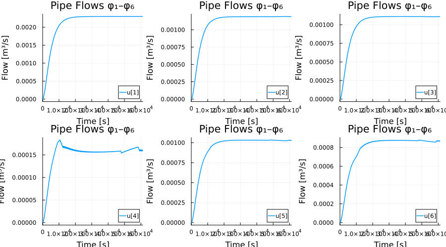
plot(ref_sol, idxs=7:12, title="Pipe Flows φ₇–φ₁₂",
xlabel="Time [s]", ylabel="Flow [m³/s]", lw=1.5,
layout=(2,3), size=(900,500))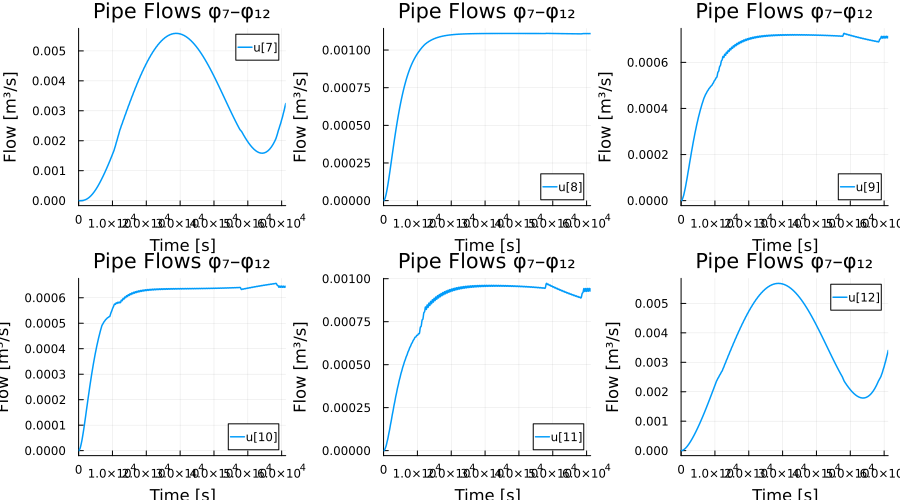
plot(ref_sol, idxs=13:18, title="Pipe Flows φ₁₃–φ₁₈",
xlabel="Time [s]", ylabel="Flow [m³/s]", lw=1.5,
layout=(2,3), size=(900,500))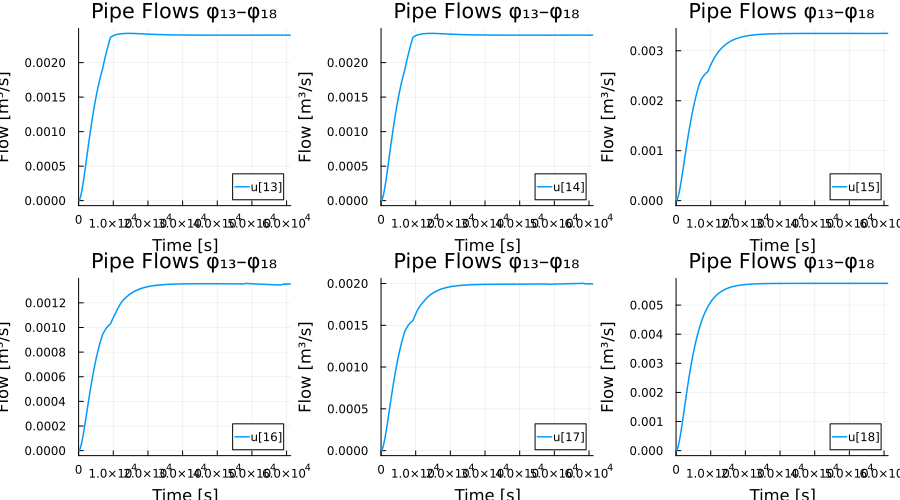
plot(ref_sol, idxs=19:24, title="Friction Factors λ₁–λ₆",
xlabel="Time [s]", ylabel="λ", lw=1.5,
layout=(2,3), size=(900,500))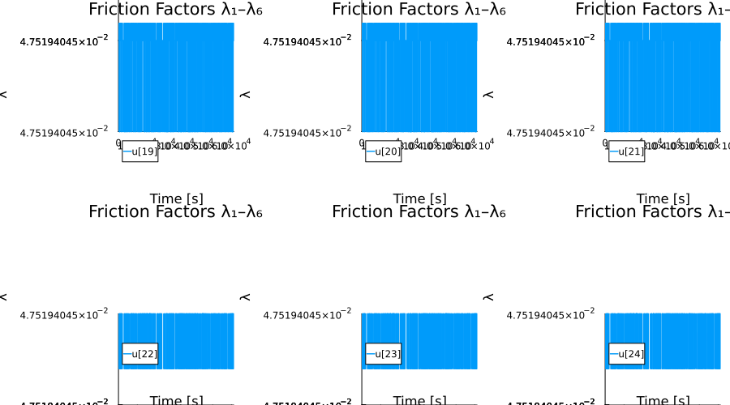
plot(ref_sol, idxs=25:30, title="Friction Factors λ₇–λ₁₂",
xlabel="Time [s]", ylabel="λ", lw=1.5,
layout=(2,3), size=(900,500))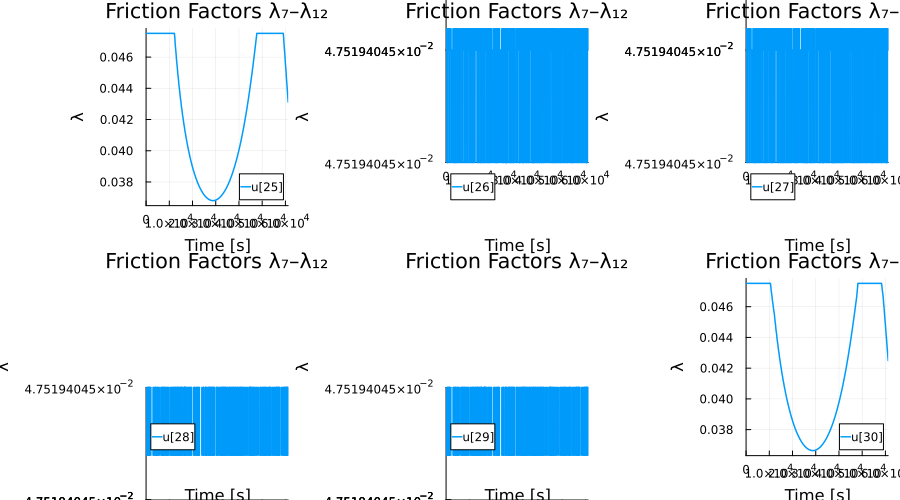
plot(ref_sol, idxs=31:36, title="Friction Factors λ₁₃–λ₁₈",
xlabel="Time [s]", ylabel="λ", lw=1.5,
layout=(2,3), size=(900,500))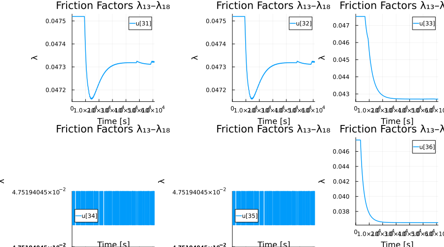
plot(ref_sol, idxs=37:49, title="Node Pressures p₁–p₁₃",
xlabel="Time [s]", ylabel="Pressure [Pa]", lw=1.5,
layout=(4,4), size=(1000,800))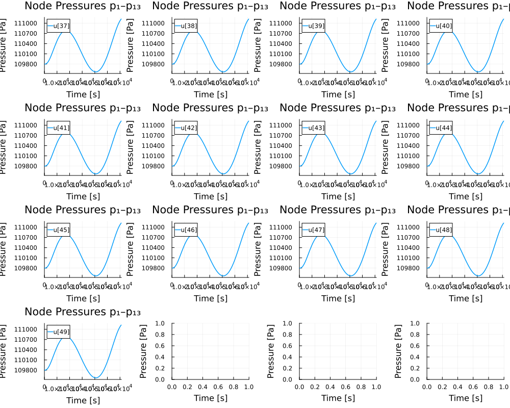
Work-Precision Diagrams
probs = [prob_mm, prob_dae, prob_mtk]
refs = [ref_sol, ref_sol, mtk_ref]3-element Vector{SciMLBase.ODESolution{Float64, 2, Vector{Vector{Float64}},
Nothing, Nothing, Vector{Float64}, Vector{Vector{Vector{Float64}}}, Nothin
g, P, OrdinaryDiffEqRosenbrock.Rodas5P{ADTypes.AutoForwardDiff{1, ForwardDi
ff.Tag{DiffEqBase.OrdinaryDiffEqTag, Float64}}, Nothing, typeof(OrdinaryDif
fEqCore.trivial_limiter!), typeof(OrdinaryDiffEqCore.trivial_limiter!), Not
hing}, IType, SciMLBase.DEStats, Nothing, Nothing, Nothing, Nothing} where
{P, IType}}:
[0.0 0.0 … 0.0022984882948733874 0.0022984882964774307; 0.0 4.431195660077
6674e-57 … 0.0011890973893698663 0.001188984902333484; … ; 109800.0 109800.
0 … 111125.96488476323 111127.09955598167; 109800.0 109800.0 … 111128.70020
120426 111129.83394004773]
[0.0 0.0 … 0.0022984882948733874 0.0022984882964774307; 0.0 4.431195660077
6674e-57 … 0.0011890973893698663 0.001188984902333484; … ; 109800.0 109800.
0 … 111125.96488476323 111127.09955598167; 109800.0 109800.0 … 111128.70020
120426 111129.83394004773]
[0.0 2.3404915416581755e-23 … 0.0007080368998375816 0.0007120911105595884;
0.04751940452918529 0.04751940452918529 … 0.04751940452918529 0.0475194045
2918529; … ; 109800.0 109800.00000000019 … 111123.39404258283 111126.924789
66535; 109800.0 109800.00000000013 … 111123.40307365899 111126.93183405453]High Tolerances
abstols = 1.0 ./ 10.0 .^ (5:8)
reltols = 1.0 ./ 10.0 .^ (1:4)
setups = [
Dict(:prob_choice => 1, :alg => Rodas5P()),
Dict(:prob_choice => 1, :alg => Rodas4P()),
Dict(:prob_choice => 1, :alg => FBDF()),
Dict(:prob_choice => 1, :alg => QNDF()),
Dict(:prob_choice => 1, :alg => NordsieckBDF()),
Dict(:prob_choice => 1, :alg => rodas()),
Dict(:prob_choice => 2, :alg => IDA()),
Dict(:prob_choice => 2, :alg => DFBDF()),
Dict(:prob_choice => 2, :alg => DNordsieckBDF()),
Dict(:prob_choice => 3, :alg => Rodas5P()),
]
labels = ["Rodas5P (MM)" "Rodas4P (MM)" "FBDF (MM)" "QNDF (MM)" "NordsieckBDF (MM)" "rodas (MM)" "IDA (DAE)" "DFBDF (DAE)" "DNordsieckBDF (DAE)" "Rodas5P (MTK)"]
wp = WorkPrecisionSet(probs, abstols, reltols, setups;
names = labels, appxsol = refs, save_everystep = false,
maxiters = Int(1e6), numruns = 10)
plot(wp, title = "Water Tube: High Tolerances")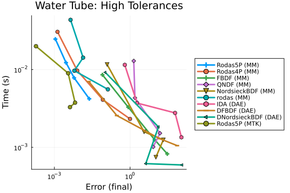
Medium Tolerances
abstols = 1.0 ./ 10.0 .^ (6:9)
reltols = 1.0 ./ 10.0 .^ (3:6)
setups = [
Dict(:prob_choice => 1, :alg => Rodas5P()),
Dict(:prob_choice => 1, :alg => Rodas4P()),
Dict(:prob_choice => 1, :alg => FBDF()),
Dict(:prob_choice => 1, :alg => QNDF()),
Dict(:prob_choice => 1, :alg => NordsieckBDF()),
Dict(:prob_choice => 1, :alg => rodas()),
Dict(:prob_choice => 2, :alg => IDA()),
Dict(:prob_choice => 2, :alg => DFBDF()),
Dict(:prob_choice => 2, :alg => DNordsieckBDF()),
Dict(:prob_choice => 3, :alg => Rodas5P()),
]
labels = ["Rodas5P (MM)" "Rodas4P (MM)" "FBDF (MM)" "QNDF (MM)" "NordsieckBDF (MM)" "rodas (MM)" "IDA (DAE)" "DFBDF (DAE)" "DNordsieckBDF (DAE)" "Rodas5P (MTK)"]
wp = WorkPrecisionSet(probs, abstols, reltols, setups;
names = labels, appxsol = refs, save_everystep = false,
maxiters = Int(1e6), numruns = 10)
plot(wp, title = "Water Tube: Medium Tolerances")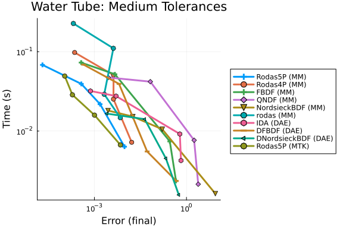
Timeseries Errors (L2)
abstols = 1.0 ./ 10.0 .^ (5:8)
reltols = 1.0 ./ 10.0 .^ (1:4)
setups = [
Dict(:prob_choice => 1, :alg => Rodas5P()),
Dict(:prob_choice => 1, :alg => Rodas4P()),
Dict(:prob_choice => 1, :alg => FBDF()),
Dict(:prob_choice => 1, :alg => QNDF()),
Dict(:prob_choice => 1, :alg => NordsieckBDF()),
Dict(:prob_choice => 1, :alg => rodas()),
Dict(:prob_choice => 2, :alg => IDA()),
Dict(:prob_choice => 2, :alg => DFBDF()),
Dict(:prob_choice => 2, :alg => DNordsieckBDF()),
Dict(:prob_choice => 3, :alg => Rodas5P()),
]
labels = ["Rodas5P (MM)" "Rodas4P (MM)" "FBDF (MM)" "QNDF (MM)" "NordsieckBDF (MM)" "rodas (MM)" "IDA (DAE)" "DFBDF (DAE)" "DNordsieckBDF (DAE)" "Rodas5P (MTK)"]
wp = WorkPrecisionSet(probs, abstols, reltols, setups; error_estimate = :l2,
names = labels, appxsol = refs, save_everystep = false,
maxiters = Int(1e6), numruns = 10)
plot(wp, title = "Water Tube: Timeseries Error (L2)")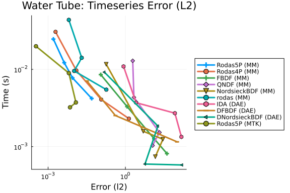
Low Tolerances
abstols = 1.0 ./ 10.0 .^ (7:10)
reltols = 1.0 ./ 10.0 .^ (4:7)
setups = [
Dict(:prob_choice => 1, :alg => Rodas5()),
Dict(:prob_choice => 1, :alg => Rodas5P()),
Dict(:prob_choice => 1, :alg => Rodas4()),
Dict(:prob_choice => 1, :alg => FBDF()),
Dict(:prob_choice => 1, :alg => NordsieckBDF()),
Dict(:prob_choice => 1, :alg => rodas()),
Dict(:prob_choice => 2, :alg => IDA()),
Dict(:prob_choice => 2, :alg => DFBDF()),
Dict(:prob_choice => 2, :alg => DNordsieckBDF()),
]
labels = ["Rodas5 (MM)" "Rodas5P (MM)" "Rodas4 (MM)" "FBDF (MM)" "NordsieckBDF (MM)" "rodas (MM)" "IDA (DAE)" "DFBDF (DAE)" "DNordsieckBDF (DAE)"]
wp = WorkPrecisionSet(probs, abstols, reltols, setups;
names = labels, appxsol = refs, save_everystep = false,
maxiters = Int(1e6), numruns = 10)
plot(wp, title = "Water Tube: Low Tolerances")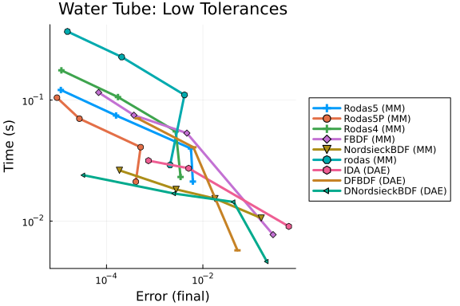
wp = WorkPrecisionSet(probs, abstols, reltols, setups; error_estimate = :l2,
names = labels, appxsol = refs, save_everystep = false,
maxiters = Int(1e6), numruns = 10)
plot(wp, title = "Water Tube: Low Tolerances (L2)")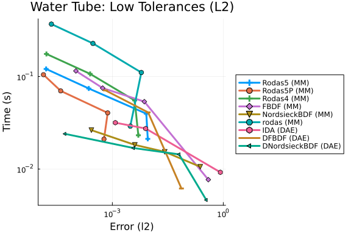
Conclusion
Appendix
These benchmarks are a part of the SciMLBenchmarks.jl repository, found at: https://github.com/SciML/SciMLBenchmarks.jl. For more information on high-performance scientific machine learning, check out the SciML Open Source Software Organization https://sciml.ai.
To locally run this benchmark, do the following commands:
using SciMLBenchmarks
SciMLBenchmarks.weave_file("benchmarks/DAE","water_tube.jmd")Computer Information:
Julia Version 1.11.9
Commit 53a02c0720c (2026-02-06 00:27 UTC)
Build Info:
Official https://julialang.org/ release
Platform Info:
OS: Linux (x86_64-linux-gnu)
CPU: 128 × AMD EPYC 7502 32-Core Processor
WORD_SIZE: 64
LLVM: libLLVM-16.0.6 (ORCJIT, znver2)
Threads: 128 default, 0 interactive, 64 GC (on 128 virtual cores)
Environment:
JULIA_PKG_PRECOMPILE_AUTO = 0
JULIA_NUM_THREADS = auto
Package Information:
Status `~/sandbox/tmp_20260825_180339_53321/dae-pr1670-validate/benchmarks/DAE/Project.toml`
⌃ [165a45c3] DASKR v3.1.5
⌃ [e993076c] DASSL v3.1.0
⌃ [f3b72e0c] DiffEqDevTools v3.2.0
⌃ [961ee093] ModelingToolkit v11.39.0
⌅ [09606e27] ODEInterfaceDiffEq v4.1.0
⌃ [1dea7af3] OrdinaryDiffEq v7.6.0
⌃ [6ad6398a] OrdinaryDiffEqBDF v2.4.2
⌃ [5960d6e9] OrdinaryDiffEqFIRK v2.6.0
⌃ [43230ef6] OrdinaryDiffEqRosenbrock v2.6.5
⌃ [2d112036] OrdinaryDiffEqSDIRK v2.8.2
⌃ [91a5bcdd] Plots v1.41.6
⌃ [31c91b34] SciMLBenchmarks v0.1.3
⌃ [90137ffa] StaticArrays v1.9.18
⌃ [10745b16] Statistics v1.11.1
⌃ [c3572dad] Sundials v6.5.1
⌃ [0c5d862f] Symbolics v7.36.0
Info Packages marked with ⌃ and ⌅ have new versions available. Those with ⌃ may be upgradable, but those with ⌅ are restricted by compatibility constraints from upgrading. To see why use `status --outdated`And the full manifest:
Status `~/sandbox/tmp_20260825_180339_53321/dae-pr1670-validate/benchmarks/DAE/Manifest.toml`
⌃ [47edcb42] ADTypes v1.23.0
[14f7f29c] AMD v0.5.3
[6e696c72] AbstractPlutoDingetjes v1.4.0
[1520ce14] AbstractTrees v0.4.5
[7d9f7c33] Accessors v0.1.45
[79e6a3ab] Adapt v4.7.0
[66dad0bd] AliasTables v1.1.3
[ec485272] ArnoldiMethod v0.4.0
⌃ [4fba245c] ArrayInterface v7.28.1
[4c555306] ArrayLayouts v1.12.2
⌃ [aae01518] BandedMatrices v1.11.0
[e2ed5e7c] Bijections v0.2.2
⌃ [b2a6c25c] BinaryHeaps v1.0.4
⌃ [caf10ac8] BipartiteGraphs v0.1.11
[d1d4a3ce] BitFlags v0.1.10
[62783981] BitTwiddlingConvenienceFunctions v0.1.6
[8e7c35d0] BlockArrays v1.10.0
⌃ [70df07ce] BracketingNonlinearSolve v1.12.5
[fa961155] CEnum v0.5.0
[2a0fbf3d] CPUSummary v0.2.7
[fb6a15b2] CloseOpenIntervals v0.1.13
⌃ [944b1d66] CodecZlib v0.7.8
[35d6a980] ColorSchemes v3.31.0
[3da002f7] ColorTypes v0.12.1
[c3611d14] ColorVectorSpace v0.11.0
[5ae59095] Colors v0.13.1
⌅ [861a8166] Combinatorics v1.0.2
⌃ [38540f10] CommonSolve v0.2.13
[bbf7d656] CommonSubexpressions v0.3.1
⌃ [f70d9fcc] CommonWorldInvalidations v1.1.2
[34da2185] Compat v4.18.1
[b152e2b5] CompositeTypes v0.1.4
[a33af91c] CompositionsBase v0.1.2
⌃ [2569d6c7] ConcreteStructs v0.2.7
[f0e56b4a] ConcurrentUtilities v2.6.0
[8f4d0f93] Conda v1.10.3
[187b0558] ConstructionBase v1.6.0
[d38c429a] Contour v0.6.3
[adafc99b] CpuId v0.3.1
[a8cc5b0e] Crayons v4.2.0
⌃ [165a45c3] DASKR v3.1.5
⌃ [e993076c] DASSL v3.1.0
[9a962f9c] DataAPI v1.16.0
[864edb3b] DataStructures v0.19.6
[e2d170a0] DataValueInterfaces v1.0.0
[8bb1440f] DelimitedFiles v1.9.1
⌃ [2b5f629d] DiffEqBase v7.14.0
⌃ [459566f4] DiffEqCallbacks v4.19.2
⌃ [f3b72e0c] DiffEqDevTools v3.2.0
⌃ [77a26b50] DiffEqNoiseProcess v5.34.1
[163ba53b] DiffResults v1.1.0
[b552c78f] DiffRules v1.16.0
⌃ [a0c0ee7d] DifferentiationInterface v0.7.20
⌃ [31c24e10] Distributions v0.25.130
[ffbed154] DocStringExtensions v0.9.5
[5b8099bc] DomainSets v0.8.1
⌃ [7c1d4256] DynamicPolynomials v0.6.6
[4e289a0a] EnumX v1.0.7
[f151be2c] EnzymeCore v0.8.21
[460bff9d] ExceptionUnwrapping v0.1.11
[e2ba6199] ExprTools v0.1.11
[55351af7] ExproniconLite v0.10.14
[c87230d0] FFMPEG v0.4.5
⌃ [7034ab61] FastBroadcast v1.3.6
[9aa1b823] FastClosures v0.3.2
[442a2c76] FastGaussQuadrature v1.3.0
⌃ [a4df4552] FastPower v1.4.1
[1a297f60] FillArrays v1.17.0
[64ca27bc] FindFirstFunctions v3.2.1
[6a86dc24] FiniteDiff v2.33.0
⌅ [53c48c17] FixedPointNumbers v0.8.6
[1fa38f19] Format v1.3.7
[f6369f11] ForwardDiff v1.4.5
[a85aefff] FunctionMaps v0.1.2
[069b7b12] FunctionWrappers v1.1.3
⌃ [77dc65aa] FunctionWrappersWrappers v1.12.1
[46192b85] GPUArraysCore v0.2.0
⌃ [28b8d3ca] GR v0.73.26
[a0844989] Gamma v1.2.0
[d7ba0133] Git v1.5.0
[86223c79] Graphs v1.14.0
[42e2da0e] Grisu v1.0.2
⌅ [cd3eb016] HTTP v1.11.0
⌅ [eafb193a] Highlights v0.5.3
[34004b35] HypergeometricFunctions v0.3.30
[7073ff75] IJulia v1.34.4
[615f187c] IfElse v0.1.1
⌃ [3263718b] ImplicitDiscreteSolve v2.1.5
[d25df0c9] Inflate v0.1.5
[18e54dd8] IntegerMathUtils v0.1.4
[8197267c] IntervalSets v0.7.14
[3587e190] InverseFunctions v0.1.17
[92d709cd] IrrationalConstants v0.2.6
[82899510] IteratorInterfaceExtensions v1.0.0
[1019f520] JLFzf v0.1.11
[692b3bcd] JLLWrappers v1.8.0
⌅ [682c06a0] JSON v0.21.4
[ae98c720] Jieko v0.2.1
⌃ [ccbc3e58] JumpProcesses v9.29.2
[ba0b0d4f] Krylov v0.10.9
⌃ [b964fa9f] LaTeXStrings v1.4.0
⌃ [23fbe1c1] Latexify v0.16.11
[10f19ff3] LayoutPointers v0.1.17
⌃ [87fe0de2] LineSearch v0.1.14
⌃ [7ed4a6bd] LinearSolve v5.10.0
[2ab3a3ac] LogExpFunctions v1.0.1
[e6f89c97] LoggingExtras v1.2.0
[1914dd2f] MacroTools v0.5.16
[d125e4d3] ManualMemory v0.1.8
⌃ [bb5d69b7] MaybeInplace v0.1.7
[739be429] MbedTLS v1.1.10
[442fdcdd] Measures v0.3.3
[e1d29d7a] Missings v1.2.0
⌃ [961ee093] ModelingToolkit v11.39.0
⌃ [7771a370] ModelingToolkitBase v1.65.0
⌃ [6bb917b9] ModelingToolkitTearing v1.20.5
[2e0e35c7] Moshi v0.3.12
[46d2c3a1] MuladdMacro v0.2.7
[102ac46a] MultivariatePolynomials v0.5.19
[ffc61752] Mustache v1.0.21
[d8a4904e] MutableArithmetics v1.8.0
[77ba4419] NaNMath v1.1.4
⌃ [8913a72c] NonlinearSolve v4.26.1
⌃ [be0214bd] NonlinearSolveBase v2.43.0
⌃ [5959db7a] NonlinearSolveFirstOrder v2.3.2
⌃ [9a2c21bd] NonlinearSolveQuasiNewton v1.15.1
⌃ [26075421] NonlinearSolveSpectralMethods v1.8.0
[54ca160b] ODEInterface v0.5.2
⌅ [09606e27] ODEInterfaceDiffEq v4.1.0
[6fe1bfb0] OffsetArrays v1.17.0
[4d8831e6] OpenSSL v1.6.1
⌅ [bac558e1] OrderedCollections v1.8.2
⌃ [1dea7af3] OrdinaryDiffEq v7.6.0
⌃ [6ad6398a] OrdinaryDiffEqBDF v2.4.2
⌃ [bbf590c4] OrdinaryDiffEqCore v4.14.3
⌃ [50262376] OrdinaryDiffEqDefault v2.4.4
⌃ [4302a76b] OrdinaryDiffEqDifferentiation v3.9.0
⌃ [5960d6e9] OrdinaryDiffEqFIRK v2.6.0
⌃ [127b3ac7] OrdinaryDiffEqNonlinearSolve v2.8.0
⌃ [43230ef6] OrdinaryDiffEqRosenbrock v2.6.5
⌃ [b4bd8bb3] OrdinaryDiffEqRosenbrockTableaus v2.4.1
⌃ [2d112036] OrdinaryDiffEqSDIRK v2.8.2
⌃ [b1df2697] OrdinaryDiffEqTsit5 v2.1.3
⌃ [79d7bb75] OrdinaryDiffEqVerner v2.2.2
[90014a1f] PDMats v0.11.41
⌅ [69de0a69] Parsers v2.8.7
[ccf2f8ad] PlotThemes v3.3.0
[995b91a9] PlotUtils v1.4.4
⌃ [91a5bcdd] Plots v1.41.6
[e409e4f3] PoissonRandom v0.4.13
[f517fe37] Polyester v0.7.19
[1d0040c9] PolyesterWeave v0.2.2
⌃ [d236fae5] PreallocationTools v1.5.0
⌅ [aea7be01] PrecompileTools v1.2.1
[21216c6a] Preferences v1.5.2
⌃ [08abe8d2] PrettyTables v3.4.6
[27ebfcd6] Primes v0.5.7
[43287f4e] PtrArrays v1.4.0
[0c0d3e7f] PureKLU v1.4.1
[1fd47b50] QuadGK v2.11.3
[988b38a3] ReadOnlyArrays v0.2.0
[795d4caa] ReadOnlyDicts v1.0.1
[3cdcf5f2] RecipesBase v1.3.4
[01d81517] RecipesPipeline v0.6.12
⌃ [731186ca] RecursiveArrayTools v4.4.0
[189a3867] Reexport v1.2.2
[05181044] RelocatableFolders v1.0.1
[ae029012] Requires v1.3.1
⌃ [ae5879a3] ResettableStacks v1.3.0
⌃ [9fe22ead] RespecializeParams v1.2.0
[79098fc4] Rmath v0.9.0
⌃ [47965b36] RootedTrees v2.25.4
⌃ [f2b01f46] Roots v3.0.6
⌃ [7e49a35a] RuntimeGeneratedFunctions v0.5.24
⌃ [9dfe8606] SCCNonlinearSolve v1.14.1
[94e857df] SIMDTypes v0.1.0
⌅ [0bca4576] SciMLBase v3.46.1
⌃ [31c91b34] SciMLBenchmarks v0.1.3
⌃ [19f34311] SciMLJacobianOperators v0.1.17
⌃ [a6db7da4] SciMLLogging v2.0.4
⌃ [c0aeaf25] SciMLOperators v1.26.1
⌃ [431bcebd] SciMLPublic v1.2.4
⌃ [53ae85a6] SciMLStructures v1.10.4
[6c6a2e73] Scratch v1.3.0
[efcf1570] Setfield v1.1.2
[992d4aef] Showoff v1.0.3
[777ac1f9] SimpleBufferStream v1.2.0
⌃ [727e6d20] SimpleNonlinearSolve v2.14.0
[699a6c99] SimpleTraits v0.9.6
[a2af1166] SortingAlgorithms v1.2.3
⌃ [a57abbd0] SparseColumnPivotedQR v2.1.6
[0a514795] SparseMatrixColorings v0.4.27
⌃ [276daf66] SpecialFunctions v2.8.3
[860ef19b] StableRNGs v1.0.4
[0c0c59c1] StarAlgebras v0.3.0
⌃ [64909d44] StateSelection v1.11.0
[aedffcd0] Static v1.4.6
[0d7ed370] StaticArrayInterface v1.10.0
⌃ [90137ffa] StaticArrays v1.9.18
[1e83bf80] StaticArraysCore v1.4.4
⌃ [10745b16] Statistics v1.11.1
[82ae8749] StatsAPI v1.8.0
⌃ [2913bbd2] StatsBase v0.34.12
[4c63d2b9] StatsFuns v2.2.1
[7792a7ef] StrideArraysCore v0.5.9
[69024149] StringEncodings v0.3.7
⌅ [892a3eda] StringManipulation v0.4.7
[09ab397b] StructArrays v0.7.3
⌃ [c3572dad] Sundials v6.5.1
⌃ [2efcf032] SymbolicIndexingInterface v0.3.54
⌃ [19f23fe9] SymbolicLimits v1.1.5
⌅ [d1185830] SymbolicUtils v4.45.0
⌃ [0c5d862f] Symbolics v7.36.0
[3783bdb8] TableTraits v1.0.1
⌃ [bd369af6] Tables v1.13.0
[ed4db957] TaskLocalValues v0.1.3
[62fd8b95] TensorCore v0.1.1
[8ea1fca8] TermInterface v2.0.0
[8290d209] ThreadingUtilities v0.5.6
[a759f4b9] TimerOutputs v1.2.0
[3bb67fe8] TranscodingStreams v0.11.3
[781d530d] TruncatedStacktraces v1.4.0
⌃ [5c2747f8] URIs v1.6.3
[3a884ed6] UnPack v1.0.2
[1cfade01] UnicodeFun v0.4.1
[41fe7b60] Unzip v0.2.0
[81def892] VersionParsing v1.3.0
[d30d5f5c] WeakCacheSets v0.1.0
[44d3d7a6] Weave v0.10.12
[ddb6d928] YAML v0.4.16
[c2297ded] ZMQ v1.5.1
[6e34b625] Bzip2_jll v1.0.9+0
[83423d85] Cairo_jll v1.18.7+0
[655fdf9c] DASKR_jll v1.0.1+0
[ee1fde0b] Dbus_jll v1.16.2+0
[2702e6a9] EpollShim_jll v0.0.20230411+1
⌃ [2e619515] Expat_jll v2.8.2+0
⌅ [b22a6f82] FFMPEG_jll v8.1.2+0
[a3f928ae] Fontconfig_jll v2.17.1+0
[d7e528f0] FreeType2_jll v2.14.3+1
[559328eb] FriBidi_jll v1.0.17+0
⌃ [0656b61e] GLFW_jll v3.4.1+1
⌅ [d2c73de3] GR_jll v0.73.26+0
⌅ [b0724c58] GettextRuntime_jll v0.22.4+0
[61579ee1] Ghostscript_jll v9.55.1+0
[020c3dae] Git_LFS_jll v3.7.1+0
[f8c6e375] Git_jll v2.55.0+0
[7746bdde] Glib_jll v2.88.3+0
[3b182d85] Graphite2_jll v1.3.16+0
⌅ [2e76f6c2] HarfBuzz_jll v8.5.1+0
[1d5cc7b8] IntelOpenMP_jll v2025.2.0+0
[aacddb02] JpegTurbo_jll v3.2.0+1
[c1c5ebd0] LAME_jll v3.100.3+0
[88015f11] LERC_jll v4.1.0+0
[1d63c593] LLVMOpenMP_jll v22.1.7+0
⌅ [e9f186c6] Libffi_jll v3.4.7+0
[7e76a0d4] Libglvnd_jll v1.7.1+1
[94ce4f54] Libiconv_jll v1.18.0+0
[4b2f31a3] Libmount_jll v2.42.0+0
[89763e89] Libtiff_jll v4.7.3+0
[38a345b3] Libuuid_jll v2.42.0+0
[856f044c] MKL_jll v2025.2.0+0
[c771fb93] ODEInterface_jll v0.0.2+0
[e7412a2a] Ogg_jll v1.3.6+0
[656ef2d0] OpenBLAS32_jll v0.3.34+0
⌃ [9bd350c2] OpenSSH_jll v10.4.1+0
⌃ [458c3c95] OpenSSL_jll v3.5.7+0
[efe28fd5] OpenSpecFun_jll v0.5.6+0
[91d4177d] Opus_jll v1.6.1+0
⌃ [36c8627f] Pango_jll v1.58.0+0
[30392449] Pixman_jll v0.46.4+0
[c0090381] Qt6Base_jll v6.10.2+2
[629bc702] Qt6Declarative_jll v6.10.2+2
[ce943373] Qt6ShaderTools_jll v6.10.2+1
[6de9746b] Qt6Svg_jll v6.10.2+0
[e99dba38] Qt6Wayland_jll v6.10.2+1
[f50d1b31] Rmath_jll v0.5.2+0
[ca45d3f4] SuiteSparse32_jll v7.12.1+0
[fb77eaff] Sundials_jll v7.5.0+0
[a44049a8] Vulkan_Loader_jll v1.3.243+0
[a2964d1f] Wayland_jll v1.24.0+0
[ffd25f8a] XZ_jll v5.8.3+0
[f67eecfb] Xorg_libICE_jll v1.1.2+0
[c834827a] Xorg_libSM_jll v1.2.6+0
[4f6342f7] Xorg_libX11_jll v1.8.13+0
[0c0b7dd1] Xorg_libXau_jll v1.0.13+0
[935fb764] Xorg_libXcursor_jll v1.2.4+0
[a3789734] Xorg_libXdmcp_jll v1.1.6+0
[1082639a] Xorg_libXext_jll v1.3.8+0
[d091e8ba] Xorg_libXfixes_jll v6.0.2+0
[a51aa0fd] Xorg_libXi_jll v1.8.4+0
[d1454406] Xorg_libXinerama_jll v1.1.7+0
[ec84b674] Xorg_libXrandr_jll v1.5.6+0
[ea2f1a96] Xorg_libXrender_jll v0.9.12+0
[a65dc6b1] Xorg_libpciaccess_jll v0.19.0+0
[c7cfdc94] Xorg_libxcb_jll v1.17.1+0
[cc61e674] Xorg_libxkbfile_jll v1.2.0+0
[e920d4aa] Xorg_xcb_util_cursor_jll v0.1.6+0
[12413925] Xorg_xcb_util_image_jll v0.4.1+0
[2def613f] Xorg_xcb_util_jll v0.4.1+0
[975044d2] Xorg_xcb_util_keysyms_jll v0.4.1+0
[0d47668e] Xorg_xcb_util_renderutil_jll v0.3.10+0
[c22f9ab0] Xorg_xcb_util_wm_jll v0.4.2+0
[35661453] Xorg_xkbcomp_jll v1.4.7+0
[33bec58e] Xorg_xkeyboard_config_jll v2.47.0+2
[c5fb5394] Xorg_xtrans_jll v1.6.0+0
[8f1865be] ZeroMQ_jll v4.3.6+0
[3161d3a3] Zstd_jll v1.5.7+1
[35ca27e7] eudev_jll v3.2.14+0
⌅ [214eeab7] fzf_jll v0.61.1+0
[a4ae2306] libaom_jll v3.14.1+0
⌃ [0ac62f75] libass_jll v0.17.4+0
[1183f4f0] libdecor_jll v0.2.2+0
[8e53e030] libdrm_jll v2.4.134+0
[2db6ffa8] libevdev_jll v1.13.4+0
[f638f0a6] libfdk_aac_jll v2.0.4+0
[36db933b] libinput_jll v1.28.1+0
[b53b4c65] libpng_jll v1.6.58+0
[a9144af2] libsodium_jll v1.0.21+0
[9a156e7d] libva_jll v2.23.0+0
[f27f6e37] libvorbis_jll v1.3.8+0
[009596ad] mtdev_jll v1.1.7+0
[1317d2d5] oneTBB_jll v2022.3.0+0
⌅ [1270edf5] x264_jll v10164.0.1+0
[dfaa095f] x265_jll v4.1.0+0
[d8fb68d0] xkbcommon_jll v1.13.0+0
[0dad84c5] ArgTools v1.1.2
[56f22d72] Artifacts v1.11.0
[2a0f44e3] Base64 v1.11.0
[ade2ca70] Dates v1.11.0
[8ba89e20] Distributed v1.11.0
[f43a241f] Downloads v1.6.0
[7b1f6079] FileWatching v1.11.0
[9fa8497b] Future v1.11.0
[b77e0a4c] InteractiveUtils v1.11.0
[4af54fe1] LazyArtifacts v1.11.0
[b27032c2] LibCURL v0.6.4
[76f85450] LibGit2 v1.11.0
[8f399da3] Libdl v1.11.0
[37e2e46d] LinearAlgebra v1.11.0
[56ddb016] Logging v1.11.0
[d6f4376e] Markdown v1.11.0
[a63ad114] Mmap v1.11.0
[ca575930] NetworkOptions v1.2.0
[44cfe95a] Pkg v1.11.0
[de0858da] Printf v1.11.0
[3fa0cd96] REPL v1.11.0
[9a3f8284] Random v1.11.0
[ea8e919c] SHA v0.7.0
[9e88b42a] Serialization v1.11.0
[6462fe0b] Sockets v1.11.0
[2f01184e] SparseArrays v1.11.0
[f489334b] StyledStrings v1.11.0
[4607b0f0] SuiteSparse
[fa267f1f] TOML v1.0.3
[a4e569a6] Tar v1.10.0
[8dfed614] Test v1.11.0
[cf7118a7] UUIDs v1.11.0
[4ec0a83e] Unicode v1.11.0
[e66e0078] CompilerSupportLibraries_jll v1.1.1+0
[deac9b47] LibCURL_jll v8.6.0+0
[e37daf67] LibGit2_jll v1.7.2+0
[29816b5a] LibSSH2_jll v1.11.0+1
[c8ffd9c3] MbedTLS_jll v2.28.6+0
[14a3606d] MozillaCACerts_jll v2023.12.12
[4536629a] OpenBLAS_jll v0.3.27+1
[05823500] OpenLibm_jll v0.8.5+0
[efcefdf7] PCRE2_jll v10.42.0+1
[bea87d4a] SuiteSparse_jll v7.7.0+0
[83775a58] Zlib_jll v1.2.13+1
[8e850b90] libblastrampoline_jll v5.11.0+0
[8e850ede] nghttp2_jll v1.59.0+0
[3f19e933] p7zip_jll v17.4.0+2
Info Packages marked with ⌃ and ⌅ have new versions available. Those with ⌃ may be upgradable, but those with ⌅ are restricted by compatibility constraints from upgrading. To see why use `status --outdated -m`